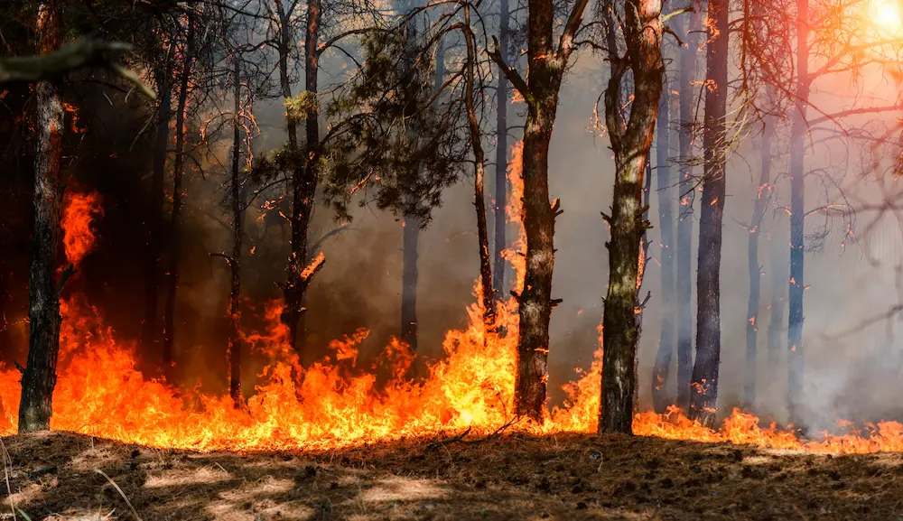
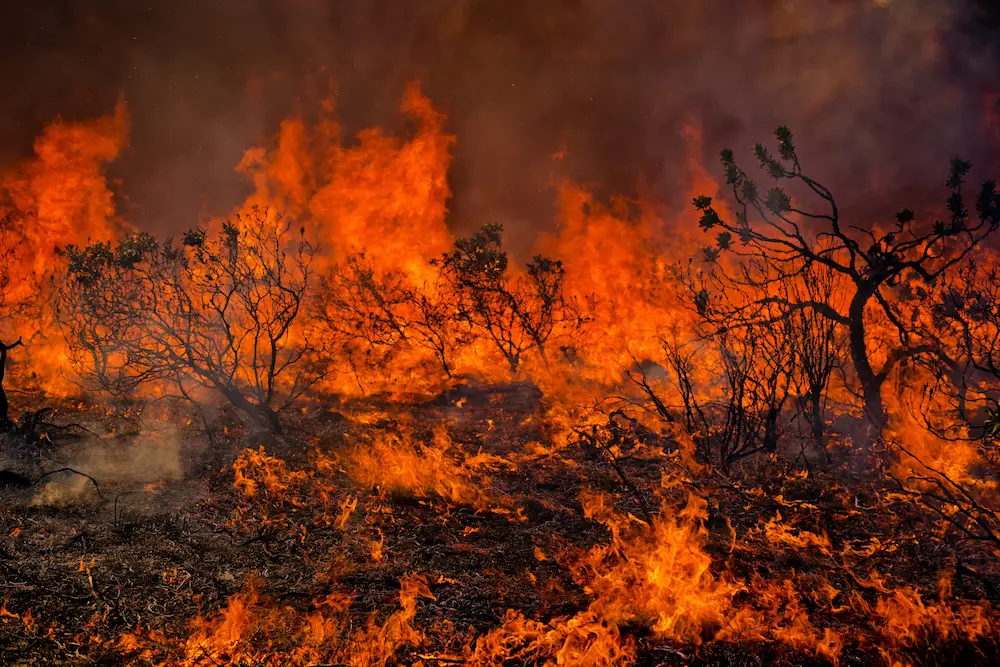
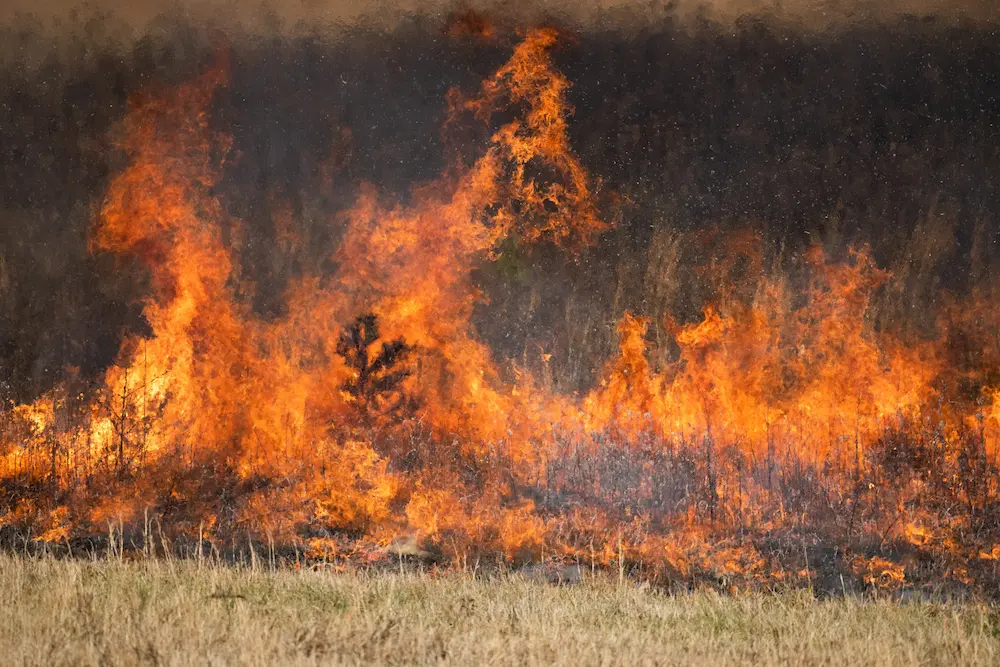

Somewhere in the world, right now, that shift is happening. Not always by accident — sometimes lightning finds dry ground, sometimes carelessness finds the wrong moment, sometimes a match is struck on purpose. The causes vary. What follows almost never does. Wind picks a direction. Heat finds fuel. A line moves across a landscape, and everything on one side of it changes.

We tend to think of this as sudden — and it is, from a distance. Up close, it unfolds in stages, each with its own rhythm: the first signs no one notices, the moment it becomes unstoppable, the slow retreat of everything that was green. Satellites watch it happen in real time, recording points of heat across entire continents, day after day, year after year. The data exists. Most of it is never really looked at.

What isn't often shown is what comes after the smoke clears — not as an ending, but as the beginning of something else. Some landscapes take years to show a single sign of life. Others, strangely, depend on fire to start over at all.